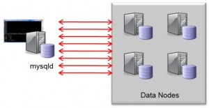

Regular readers of this Blog or attendees at the 2010 O’Reilly MySQL Conference may recall a feature that the MySQL Cluster team were working to speed up JOINs (see Jonas’s slides from that conference here). The good news is that work has continued since then and it is now part of the new MySQL Cluster 7.2 Milestone Development Release. This post will step through where to get hold of the binaries and see the benefits for yourself. The examples I try here result in a 25x speedup just by turning the feature on – I’ve also seen a 50x speedup on other queries!
We’re anxious to get feedback on what benefits you see with your application’s JOINs, please respond to this post.
What’s in a name?
If some of this seems familiar but you don’t remember hearing the term “Adaptive Query Localization” before then you’re not going crazy – previous internal names were SPJ (Select Project Join) and Pushed-Down Joins. We just figured that Adaptive Query Localization was more descriptive.
Classic Nested-Loop-Join
{kind=link}
Classic Nested-Loop-Join
What does it do?
Traditionally, joins have been implemented in the MySQL Server where the query was executed. This is implemented as a nested-loop join; for every row from the first part of the join, a request has to be sent to the data nodes in order to fetch the data for the next level of the join and for every row in that level…. This method can result in a lot of network messages which slows down the query (as well as wasting resources).
When turned on, Adaptive Query Localization results in the hard work being pushed down to the data nodes where the data is locally accessible. As a bonus, the work is divided amongst the pool of data nodes and so you get parallel execution.

NDB API

NDB API
How is it implemented?
I’ll leave the real deep and dirty details to others but cover the basic concepts here. All API nodes access the data nodes using the native C++ NDB API, the MySQL Server is one example of an API node (the new Memcached Cluster API is another). This API has been expanded to allowed parameterised or linked queries where the input from one query is dependent on the previous one.
To borrow an example from an excellent post by Frazer Clement on the topic, the classic way to implement a join would be…
SQL > select t1.b, t2.c from t1,t2 where t1.pk=22 and t1.b=t2.pk; ndbapi > read column b from t1 where pk = 22;
[round trip]
(b = 15) ndbapi > read column c from t2 where pk = 15;
[round trip]
(c = 30)
[ return b = 15, c = 30 ]
Using the new functionality this can be performed with a single network round trip where the second read operation is dependent on the results of the first…
ndbapi > read column @b:=b from t1 where pk = 22; read column c from t2 where pk=@b;
[round trip]
(b = 15, c = 30)
[ return b = 15, c = 30 ]

Effects of Adaptive Query Localization
Note that if your application is using the NDB API directly then you can use this same linked query functionality to speed up your queries.
Where do I get it?
Download the source or binaries from http://dev.mysql.com/downloads/cluster/ (select the sub-tab for the Development Milestone Release).
How do I use it?
The first step is to get you Cluster up and running. As the focus of this feature is to reduce the amount of network messaging, it makes sense to perform your tests on multiple machines; if you need pointers on setting Cluster up then check this post on running Cluster over multiple machines (or the Windows version).
{kind=link}
System Configuration
For my test, I used 2 PCs, each running Fedora 14 with Quad-Core CPU, 8 GBytes of RAM and Gigabit Ethernet connectivity. Each PC was running 2 data nodes (ndbd rather than ndbmtd) and one of the PCs was also running the management node and the MySQL Server running the queries (note that this configuration is not suitable for a HA deployment – for that run the management node on a third machine and run a MySQL Server on 192.168.1.11).
I’d hoped to go a step further and have the MySQL Server run on a third machine but hardware problems put paid to that – the reason that this would have been interesting is that it would have meant more of the messaging would be over the network and so would give a more realistic performance comparison (the speedup factor should have been higher). Another couple of steps that could further improve the speedup:
- Use multi-threaded data nodes (as more of the work is being done in the data nodes, this should help)
- Use machines with more cores
- Tune the configuration parameters (I’m keeping it as simple as possible here)
For reference, here is the configuration file used (config.ini):
[ndb_mgmd] hostname=192.168.1.7 datadir=/home/billy/mysql/spj/my_cluster/ndb_data NodeId=1 [ndbd default] noofreplicas=2 DiskPageBufferMemory=4M [ndbd] hostname=192.168.1.7 datadir=/home/billy/mysql/spj/my_cluster/ndb_data NodeId=3 [ndbd] hostname=192.168.1.11 datadir=/home/billy/mysql/spj/my_cluster/ndb_data NodeId=4 [ndbd] hostname=192.168.1.7 datadir=/home/billy/mysql/spj/my_cluster/ndb_data2 NodeId=5 [ndbd] hostname=192.168.1.11 datadir=/home/billy/mysql/spj/my_cluster/ndb_data2 NodeId=6 [mysqld] NodeId=50
And for the MySQL Server (my.cnf):
[mysqld]
ndbcluster
datadir=/home/billy/mysql/spj/my_cluster/mysqld_data
As a reminder – here is how you start up such a Cluster:
[billy@ws2 my_cluster]$ ndb_mgmd -f conf/config.ini --initial --configdir=/home/billy/mysql/spj/my_cluster/conf/ [billy@ws2 my_cluster]$ ndbd -c 192.168.1.7:1186
[billy@ws1 my_cluster]$ ndbd -c 192.168.1.7:1186
[billy@ws2 my_cluster]$ ndbd -c 192.168.1.7:1186
[billy@ws1 my_cluster]$ ndbd -c 192.168.1.7:1186
[billy@ws2 my_cluster]$ ndb_mgm -e show # Wait until data nodes are running [billy@ws2 my_cluster]$ mysqld --defaults-file=conf/my.cnf& [billy@ws2 my_cluster]$ mysql -h 127.0.0.1 -P 3306 -u root
Three tables that are to be used for the queries and these are created as follows:
mysql> CREATE DATABASE clusterdb; USE clusterdb; mysql> CREATE TABLE residents (id INT NOT NULL PRIMARY KEY, name VARCHAR(20), postcode VARCHAR(20)) ENGINE=ndb; mysql> CREATE TABLE postcodes (postcode VARCHAR(20) NOT NULL PRIMARY KEY, town VARCHAR(20)) ENGINE=ndb; mysql> CREATE TABLE towns (town VARCHAR(20) NOT NULL PRIMARY KEY, county VARCHAR(20)) ENGINE=ndb;
I then added 100K rows to each of these tables; if you want to recreate this then you can download the data files here.
mysql> LOAD DATA LOCAL INFILE "/home/billy/Dropbox/LINUX/projects/SPJ/residents.csv" REPLACE INTO TABLE residents FIELDS TERMINATED BY ',' ENCLOSED BY '"'; mysql> LOAD DATA LOCAL INFILE "/home/billy/Dropbox/LINUX/projects/SPJ/postcodes.csv" REPLACE INTO TABLE postcodes FIELDS TERMINATED BY ',' ENCLOSED BY '"'; mysql> LOAD DATA LOCAL INFILE "/home/billy/Dropbox/LINUX/projects/SPJ/towns.csv" REPLACE INTO TABLE towns FIELDS TERMINATED BY ',' ENCLOSED BY '"';
Now everything is set up to actually perform our tests! First of all two queries are run with the adaptive query localization turned off i.e. this is the “before” picture:
mysql> set ndb_join_pushdown=off;
mysql> SELECT COUNT(*) FROM residents,postcodes WHERE residents.postcode=postcodes.postcode AND postcodes.town="MAIDENHEAD"; +----------+ | COUNT(*) | +----------+ | 20000 | +----------+ 1 row in set (27.65 sec)
mysql> SELECT COUNT(*) FROM residents,postcodes,towns WHERE residents.postcode=postcodes.postcode AND postcodes.town=towns.town AND towns.county="Berkshire"; +----------+ | COUNT(*) | +----------+ | 40001 | +----------+ 1 row in set (48.68 sec)
and then the test is repeated with adaptive query localization turned on:
mysql> set ndb_join_pushdown=on;
mysql> SELECT COUNT(*) FROM residents,postcodes WHERE residents.postcode=postcodes.postcode AND postcodes.town="MAIDENHEAD"; +----------+ | COUNT(*) | +----------+ | 20000 | +----------+ 1 row in set (1.07 sec)
mysql> SELECT COUNT(*) FROM residents,postcodes,towns WHERE residents.postcode=postcodes.postcode AND postcodes.town=towns.town AND towns.county="Berkshire"; +----------+ | COUNT(*) | +----------+ | 40001 | +----------+ 1 row in set (2.02 sec)
For those 2 queries it represents a 25.8x and 24.1x speedup.
It’s important to note that not every join can currently be pushed down to the data nodes; here are the current rules (we hope to relax them overtime) for a query to be suitable:
- JOINed columns must have the same data type
- Queries should not reference BLOBs
- Explicit locking is not supported
- Only supports fully or partially qualified primary keys or plain indexes as access method for child tables (first part of JOIN can be a full table scan)
You can check whether your query is fitting these rules using EXPLAIN, for example:
mysql> set ndb_join_pushdown=on;
mysql> EXPLAIN SELECT COUNT(*) FROM residents,postcodes WHERE residents.postcode=postcodes.postcode AND postcodes.town="MAIDENHEAD"; +----+-------------+-----------+--------+---------------+---------+---------+------------------------------+--------+--------------------------------------------------------------------------+ | id | select_type | table | type | possible_keys | key | key_len | ref | rows | Extra | +----+-------------+-----------+--------+---------------+---------+---------+------------------------------+--------+--------------------------------------------------------------------------+ | 1 | SIMPLE | residents | ALL | NULL | NULL | NULL | NULL | 100000 | Parent of 2 pushed join@1 | | 1 | SIMPLE | postcodes | eq_ref | PRIMARY | PRIMARY | 22 | clusterdb.residents.postcode | 1 | Child of 'residents' in pushed join@1; Using where with pushed condition | +----+-------------+-----------+--------+---------------+---------+---------+------------------------------+--------+--------------------------------------------------------------------------+
mysql> EXPLAIN EXTENDED SELECT COUNT(*) FROM residents,postcodes,towns WHERE residents.postcode=postcodes.postcode AND postcodes.town=towns.town AND towns.county="Berkshire"; +----+-------------+-----------+--------+---------------+---------+---------+------------------------------+--------+----------+------------------------------------------------------------------------------------------------------------------------+ | id | select_type | table | type | possible_keys | key | key_len | ref | rows | filtered | Extra | +----+-------------+-----------+--------+---------------+---------+---------+------------------------------+--------+----------+------------------------------------------------------------------------------------------------------------------------+ | 1 | SIMPLE | residents | ALL | NULL | NULL | NULL | NULL | 100000 | 100.00 | Parent of 3 pushed join@1 | | 1 | SIMPLE | postcodes | eq_ref | PRIMARY | PRIMARY | 22 | clusterdb.residents.postcode | 1 | 100.00 | Child of 'residents' in pushed join@1 | | 1 | SIMPLE | towns | eq_ref | PRIMARY | PRIMARY | 22 | clusterdb.postcodes.town | 1 | 100.00 | Child of 'postcodes' in pushed join@1; Using where with pushed condition: (`clusterdb`.`towns`.`county` = 'Berkshire') | +----+-------------+-----------+--------+---------------+---------+---------+------------------------------+--------+----------+------------------------------------------------------------------------------------------------------------------------+
Note that if you want to check for more details why your join isn’t currently being pushed down to the data node then you can use “EXPLAIN EXTENDED” and then “SHOW WARNINGS” to get more hints. Hopefully that will allow you to tweak your queries to get the best improvements.
PLEASE let us know your experiences and give us examples of queries that worked well and (just as importantly) those that didn’t so that we can improve the feature – just leave a comment on this Blog with your table schemas, your query and your before/after timings.
Andrew,
I am wondering, from what you have researched, how close the performance of AQL is matched to a join in a stand alone instance of mysql?
Andrew!!! It’s very cool new feature and YES it works!
BUT Do you have suggestions about using other types of joins? It’s seems to me that nothing changed for them =(
For example LEFT JOIN is very slow on both versions. Thanks
Hi Igor,
would you mind sharing the relevant parts of your schema and the JOINs that aren’t seeing a benefit? We know that not all JOINs benefit but we’d like to get feedback on what restrictions we should be removing.
Thanks, Andrew.
DDL:
CREATE TABLE `t1` (
`id` int(11) NOT NULL DEFAULT ‘0’,
`aid` varchar(11) COLLATE utf8_unicode_ci NOT NULL,
`m` varchar(10) COLLATE utf8_unicode_ci NOT NULL,
PRIMARY KEY (`id`),
KEY `aid` (`aid`,`m`),
KEY `aid_2` (`aid`)
) ENGINE=InnoDB DEFAULT CHARSET=utf8 COLLATE=utf8_unicode_ci
CREATE TABLE `t2` (
`id` int(11) NOT NULL DEFAULT ‘0’,
`t1_id` int(11) DEFAULT NULL,
`f2` varchar(20) COLLATE utf8_unicode_ci DEFAULT NULL,
`f3` varchar(32) COLLATE utf8_unicode_ci DEFAULT NULL,
`created_at` datetime DEFAULT NULL,
`st` smallint(6) DEFAULT NULL,
PRIMARY KEY (`id`),
KEY `t1_id` (`t1_id`),
KEY `f2` (`f2`),
KEY `f3` (`f3`),
KEY `st` (`st`),
KEY `created_at` (`created_at`)
) ENGINE=InnoDB DEFAULT CHARSET=utf8 COLLATE=utf8_unicode_ci
mysql> select count(*) from t1;
+———-+
| count(*) |
+———-+
| 9382 |
+———-+
1 row in set (0.14 sec)
mysql> select count(*) from t2;
+———-+
| count(*) |
+———-+
| 3704 |
+———-+
1 row in set (0.14 sec)
INNODB:
mysql> explain SELECT t1.* , t.f2, t.f3 FROM t1 LEFT JOIN t2 t ON t1.id = t.t1_id AND t.st in (0,2) ORDER BY t.created_at desc LIMIT 50 OFFSET 0 ;
+—-+————-+——-+——-+—————+——-+———+————————–+——+———————————————-+
| id | select_type | table | type | possible_keys | key | key_len | ref | rows | Extra |
+—-+————-+——-+——-+—————+——-+———+————————–+——+———————————————-+
| 1 | SIMPLE | t1 | index | NULL | aid | 67 | NULL | 9687 | Using index; Using temporary; Using filesort |
| 1 | SIMPLE | t | ref | t1_id,st | t1_id | 5 | testdb.t1.id | 1 | |
+—-+————-+——-+——-+—————+——-+———+————————–+——+———————————————-+
2 rows in set (0.13 sec)
mysql> SELECT t1.* , t.f2, t.f3 FROM t1 LEFT JOIN t2 t ON t1.id = t.t1_id AND t.st in (0,2) ORDER BY t.created_at desc LIMIT 50 OFFSET 0 ;
50 rows in set (0.18 sec)
########################################
NDB:
mysql> alter table t1 engine=ndb;
Query OK, 9382 rows affected (0.78 sec)
Records: 9382 Duplicates: 0 Warnings: 0
mysql> alter table t2 engine=ndb;
Query OK, 3704 rows affected (0.73 sec)
Records: 3704 Duplicates: 0 Warnings: 0
mysql> explain SELECT t1.* , t.f2, t.f3 FROM t1 LEFT JOIN t2 t ON t1.id = t.t1_id AND t.st in (0,2) ORDER BY t.created_at desc LIMIT 50 OFFSET 0 ;
+—-+————-+——-+——-+—————+——+———+——+——+———————————+
| id | select_type | table | type | possible_keys | key | key_len | ref | rows | Extra |
+—-+————-+——-+——-+—————+——+———+——+——+———————————+
| 1 | SIMPLE | t1 | ALL | NULL | NULL | NULL | NULL | 9382 | Using temporary; Using filesort |
| 1 | SIMPLE | t | range | t1_id,st | st | 3 | NULL | 6 | Using where |
+—-+————-+——-+——-+—————+——+———+——+——+———————————+
2 rows in set (0.15 sec)
mysql> SELECT t1.* , t.f2, t.f3 FROM t1 LEFT JOIN t2 t ON t1.id = t.t1_id AND t.st in (0,2) ORDER BY t.created_at desc LIMIT 50 OFFSET 0 ;
50 rows in set (1 min 59.34 sec)
We can speedup this query using simple cheat:
mysql> explain SELECT t1.* , t.f2, t.f3 FROM t1 LEFT JOIN ( select * from t2) t ON t1.id = t.t1_id AND t.st in (0,2) ORDER BY t.created_at desc LIMIT 50 OFFSET 0 ;
+—-+————-+————+——+—————+——+———+——+——+———————————+
| id | select_type | table | type | possible_keys | key | key_len | ref | rows | Extra |
+—-+————-+————+——+—————+——+———+——+——+———————————+
| 1 | PRIMARY | t1 | ALL | NULL | NULL | NULL | NULL | 9382 | Using temporary; Using filesort |
| 1 | PRIMARY | | ALL | NULL | NULL | NULL | NULL | 3704 | |
| 2 | DERIVED | t2 | ALL | NULL | NULL | NULL | NULL | 3704 | |
+—-+————-+————+——+—————+——+———+——+——+———————————+
3 rows in set (0.15 sec)
mysql> SELECT t1.* , t.f2, t.f3 FROM t1 LEFT JOIN ( select * from t2) t ON t1.id = t.t1_id AND t.st in (0,2) ORDER BY t.created_at desc LIMIT 50 OFFSET 0 ;
50 rows in set (3.66 sec)
OR
mysql> SELECT t1.* , t.f2, t.f3 FROM t1 LEFT JOIN ( select * from t2 where t2.st in (0,2)) t ON t1.id = t.t1_id ORDER BY t.created_at desc LIMIT 50 OFFSET 0 ;
50 rows in set (2.44 sec)
But 2.44 sec this is very slow result for us.
Server version: 5.5.15-ndb-7.2.1-gpl-log
This query is not pushed as all, which explain the slow performance. The reason for this is that the optimizer has two conflicting choices between index usage:
1) Either use index ‘ KEY t2.t1_id to lookup t2 rows on ‘t.t1_id = t1.id’
2) or use index ‘KEY t.st’ to evaluate ‘t.st in (0,2’
The optimizer makes the bad choice of 2), which result in a ‘range’ access when joining in table t2. This access type is not supported as a pushable join.
You might try, which may or may not fix this:
– analyze table t1,t2;
– Force usage of index t2.t1_id: http://dev.mysql.com/doc/refman/5.1/en/index-hints.html
– Rewrite join to ‘… ON t1.id = t.t1_id WHERE t.st in (0,2)’
BEWARE: Last suggestion is not a 100% equivalent query.
Regards Ole John Aske
FYI: EXPLAIN EXTENDED on the query will give you the reason for the query not being pushed as warnings, which you may then list with ‘show warnings’
I run analyze and this not have any effect. I cant use ‘… ON t1.id = t.t1_id WHERE t.st in (0,2)’ because this not equivalent query.
I tried variant of query without additional join condition and without sorting:
mysql> explain extended SELECT t1.* , t.f2, t.f3 FROM t1 LEFT JOIN t2 t ON t1.id = t.t1_id;
+—-+————-+——-+——+—————+——-+———+————————–+——+———-+——-+
| id | select_type | table | type | possible_keys | key | key_len | ref | rows | filtered | Extra |
+—-+————-+——-+——+—————+——-+———+————————–+——+———-+——-+
| 1 | SIMPLE | t1 | ALL | NULL | NULL | NULL | NULL | 9382 | 100.00 | |
| 1 | SIMPLE | t | ref | t1_id | t1_id | 5 | testdb.t1.id | 1 | 100.00 | |
+—-+————-+——-+——+—————+——-+———+————————–+——+———-+——-+
Show warnings say “Can’t push table ‘t’ as child of ‘t1’, outer join of scan-child not implemented”;
mysql> SELECT t1.* , t.f2, t.f3 FROM t1 LEFT JOIN t2 t ON t1.id = t.t1_id;
9702 rows in set (4.38 sec)
Now optimizer use “right” index, but query slow too.
And again we can speedup query using cheat:
mysql> explain extended SELECT t1.* , t.f2, t.f3 FROM t1 LEFT JOIN (select * from t2) t ON t1.id = t.t1_id;
+—-+————-+————+——+—————+——+———+——+——+———-+——-+
| id | select_type | table | type | possible_keys | key | key_len | ref | rows | filtered | Extra |
+—-+————-+————+——+—————+——+———+——+——+———-+——-+
| 1 | PRIMARY | t1 | ALL | NULL | NULL | NULL | NULL | 9382 | 100.00 | |
| 1 | PRIMARY | | ALL | NULL | NULL | NULL | NULL | 3704 | 100.00 | |
| 2 | DERIVED | t2 | ALL | NULL | NULL | NULL | NULL | 3704 | 100.00 | |
+—-+————-+————+——+—————+——+———+——+——+———-+——-+
3 rows in set, 2 warnings (0.15 sec)
mysql> SELECT ta.* , t.f2, t.f3 FROM (select * from t1) ta LEFT JOIN (select * from t2) t ON ta.id = t.t1_id;
9702 rows in set (3.38 sec)
I think that sequence scan of sub query faster then indexed access because sql node loads all rows t2 to memory from datanodes as one operation аnd doesn’t use many iterations for get records from t2. But optimizer doesn’t know about real costs of random operations via network and uses indexed access. Maybe this issue can be fixed with hash join. I think that hash join uses sequence scan of both tables without indexed access. Do you have any plans to implement hash join algorithm in mysql cluster?
I am sorry for my mistake. last query:
mysql> SELECT t1.* , t.f2, t.f3 FROM t1 LEFT JOIN (select * from t2) t ON t1.id = t.t1_id;
But result same :
9702 rows in set (3.29 sec
There are some limitations on which kind of join operations which can be ‘pushed’ to the datanodes. As the warning from EXPLAIN EXTENDED suggest, outer join of (partial) scans are among these.
Sorry for not realizing this in my previous analyzis. FYI: If the t2 child table had the access type ‘eq_ref’, it would have been pushed, or of the join wasn’t an outer join.
Regarding plans for lifting this limitation, or implementing new algorithms: I am not in a position to be able to comment on this.
Thank you a lot for help
The link for the data of the example seems to be down.
Can you please re-upload the data?
Sorry about that – fixed now.